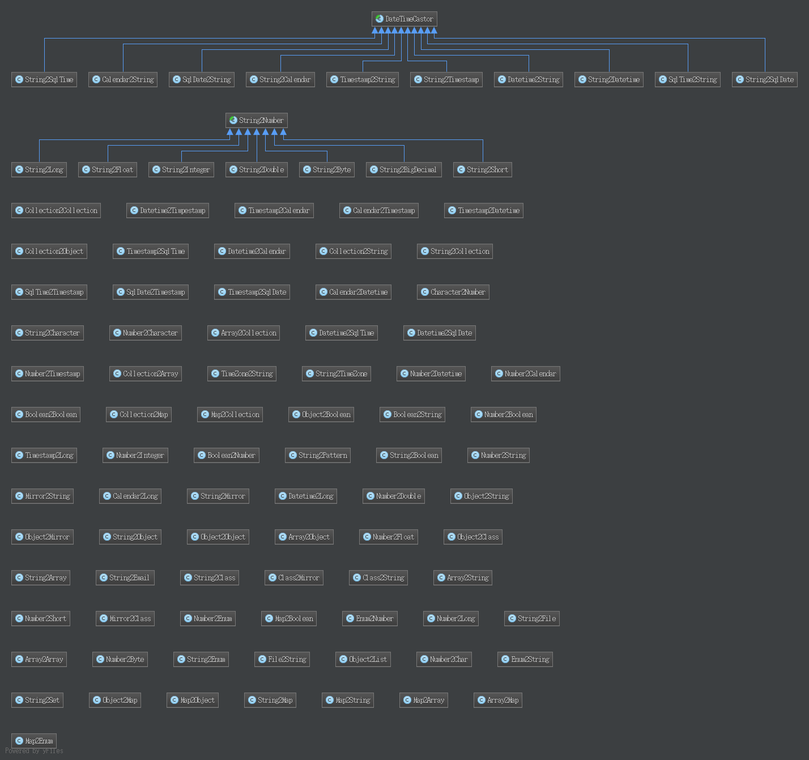

上篇阅读了nutz中Object2Mapl的源码，点击这里查看 这篇来说说Mapl2Object。Mapl中针对Mapl转换为Object提供了两个接口：
- maplistToObj(Object maplist, Type type)
- maplistToT(Object maplist, Class
clz)
具体用法参考官方官方文档，这里不赘述。 maplist转换为真实的对象，主要使用了ObjConvertImpl类实现。 这篇文章主要来看这个类的实现。
ObjConvertImpl
ObjConvertImpl 是MaplConvert接口的一个实现，该接口只有一个方法convert ,用于对象转换，这个接口总共有4个实现，其中一个在json中有提到JsonConvertImpl，就是将maplist结构数据转换为json格式的字符串。
ObjConvertImpl中将要转换的maplist结构分为两大类来处理：
- 基本数据类型
- 其他对象，这里又分为，集合，map，数组，pojo对象4中类型的对象来处理。而且中钱三个都是循环处理，最终最中再调用处理pojo对象的方法。而pojo对象，其实又是调用上面那个处理基本数据类型的方法来进行数据转换。
刚开始看这部分代码的时候，没有把眼光拔高了看，而是直接一行行阅读了，结果很多if判断和自调用（或者是递归调用，其实也不是方法自己调用自己，而是调用本类中其他方法）把我搞得脑袋有点大。 后来回过神，才注意到，原来是酱紫哦， 下面用为伪代码把这个类的实现说明以下，入口函数是convert(Object model)：
public Object convert(Object model) {
如果 是基本类型和字符串 则 处理基本类型和字符串();
否则 处理其他()：
如果 是集合，则处理集合()；
循环集合，处理每条记录：
如果是 基本类型和字符串 则 处理基本类型和字符串();
否则 处理其他();
如果 是map，则处理map()；
循环集合，处理每条记录：
如果是 基本类型和字符串 则 处理基本类型和字符串();
否则 处理其他();
如果 是数组，则处理数组()：
循环集合，处理每条记录：
如果是 基本类型和字符串 则 处理基本类型和字符串();
否则 处理其他();
如果 是pojo，则处理pojo()：
循环pojo每个属性：
调用convert获取属性值;
然后将改值set到真实的java对象中，//这里是最终返回的真实的java对象，真是寻寻觅觅不容易啊，将
}
有没有晕！！
- 该方法，最终会把传入的maplist结构的数据一直处理到最基本的数据类型和String，
- 然后再调用Castors类得castTo方法将源数据转换为制定类型的目标数据。
- 具体转换方法，由抽象类Castor定义，然后针对每种转换场景进行了具体的实现，实现类在包org.nutz.castor.castor下。
- 总共98个类，有兴趣的自行去看api吧 点击查看
- 简单看了几个，关于类型转换的实现，我的想法是，有两点很重要：一个是效率，一个是容错性。 